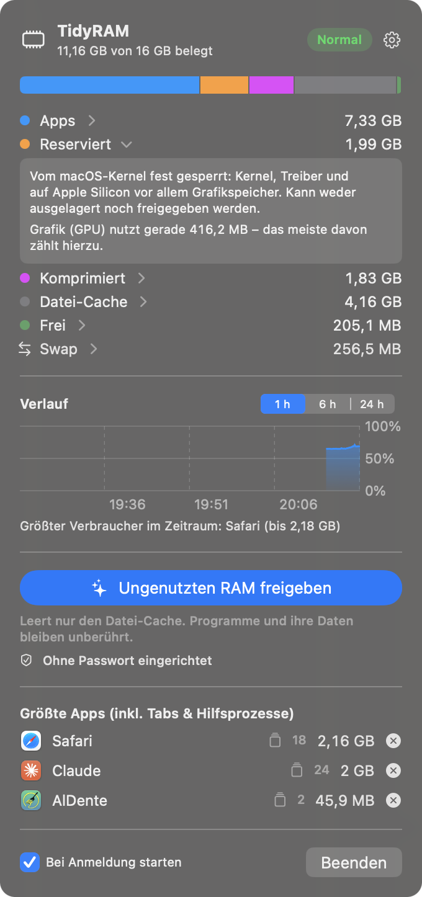
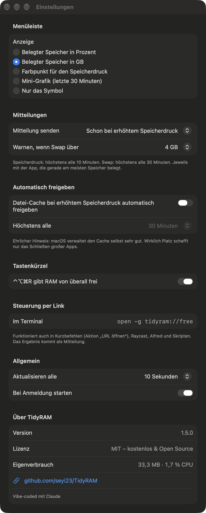

Der Arbeitsspeicher deines Macs, aufgeräumt und klar.
Eine schlanke Menüleisten-App, die zeigt, was deinen RAM wirklich belegt, und den Datei-Cache sicher freigibt, ohne deine Programme oder ihre Daten anzutasten.
brew tap seyi23/tidyram && brew trust seyi23/tidyram && brew install --cask tidyrambrew trust ist erst ab Homebrew 7 nötig.

Was die App kann
Dieselben Werte wie in der Aktivitätsanzeige, in einfachen Worten erklärt, direkt in deiner Menüleiste.
Speicher auf einen Blick
Apps, Reserviert, Komprimiert, Datei-Cache, Frei und Swap, dazu der echte Speicherdruck direkt vom Kernel.
Details per Klick
Jeden Bereich aufklappen für eine Erklärung und Details: Grafikspeicher, Kompressionsfaktor, sofort verwerfbarer Cache, Swap-Aktivität.
Ungenutzten RAM freigeben
Leert nur den Datei-Cache mit Apples eigenem purge. Einmal eingerichtet, fragt es nie wieder nach dem Passwort.
Wer frisst Speicher?
Jede App samt aller Tabs und Hilfsprozesse. So zeigt Safari seine echten 3 GB statt 300 MB.
Verlauf über 24 Stunden
Umschaltbar zwischen 1, 6 und 24 Stunden. Mit der Maus siehst du Uhrzeit, Speicherdruck und die größte App zu jedem Zeitpunkt.
Mitteilungen
Ein Hinweis, wenn der Speicher kritisch wird oder der Swap eine selbst gewählte Grenze überschreitet, mit der App, die am meisten belegt.
Mini-Grafik in der Menüleiste
Wahlweise Prozent, GB, ein farbiger Punkt für den Speicherdruck, ein kleiner 30-Minuten-Verlauf oder nur das Symbol.
Tastenkürzel & Automatisierung
Überall ⌃⌥⌘R drücken, oder open -g tidyram://free aus Terminal, Kurzbefehlen, Raycast oder Alfred.
Deutsch & Englisch
Folgt der Systemsprache. Für eine weitere Sprache übersetzt man eine einzige Datei.
Sicher gebaut
macOS verwaltet den Arbeitsspeicher selbst sehr gut. TidyRAM respektiert das.
- Leert nur den Datei-Cache, also Daten, die ohnehin auf der SSD liegen.
- Beendet nie Apps mit Gewalt. Der ✕-Knopf beendet regulär wie ⌘Q, Apps können also nach dem Sichern fragen.
- Liest andere Prozesse nur, verändert sie nie.
- Führt mit Admin-Rechten genau einen fest eingetragenen Befehl aus:
/usr/sbin/purge. - Kein Netzwerkzugriff, kein Tracking. Einstellungen und Verlauf bleiben auf deinem Mac.

Installation
Drei Wege, alle kostenlos.
- Herunterladen:
TidyRAM-<version>.zipunter Releases laden, entpacken undTidyRAM.appin den Ordner „Programme“ ziehen. - Homebrew: mit dem Befehl oben. Updates später mit
brew upgrade --cask tidyram. - Selbst bauen:
git clone https://github.com/seyi23/TidyRAM.git, dann./scripts/install.sh.
TidyRAM ist nicht von Apple notarisiert. macOS blockiert deshalb einmal den ersten Start. Freigeben unter Systemeinstellungen → Datenschutz & Sicherheit → „Dennoch öffnen“. Vollständige Dokumentation · PDF
Vibe-coded mit Claude
TidyRAM ist komplett per Vibe Coding entstanden: Idee und Anforderungen kamen im Gespräch, und Claude von Anthropic hat Code, Skripte, Tests und Dokumentation geschrieben. Der Code ist ausführlich kommentiert. Schau gern selbst hinein, besonders in den Teil, der mit Admin-Rechten läuft.